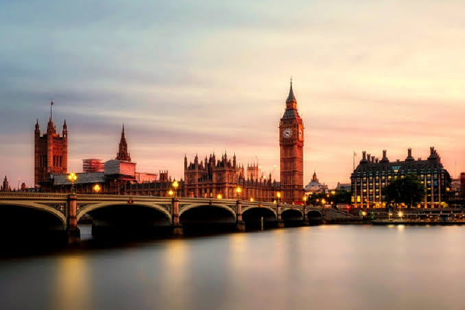
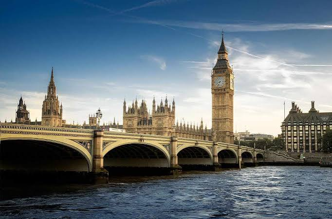

Sejarah

London didirikan oleh bangsa Romawi sekitar tahun 43 M dengan nama Londinium. Selama berabad-abad, London berkembang menjadi salah satu pusat perdagangan, keuangan, dan budaya terpenting di dunia.
Meskipun pernah mengalami berbagai peristiwa besar seperti Wabah Besar London (1665) dan Kebakaran Besar London (1666), kota ini terus dibangun kembali dan tumbuh menjadi megapolitan modern tanpa kehilangan nilai sejarahnya.
Geografis
Secara geografis, London terletak di bagian tenggara Inggris dan dibelah oleh Sungai Thames yang mengalir menuju Laut Utara.
Topografi wilayah London didominasi oleh dataran rendah dengan iklim sedang yang cenderung sejuk dan sering diiringi curah hujan sepanjang tahun.
Wisata

London memiliki berbagai ikon wisata terkenal di dunia seperti Big Ben, Tower Bridge, London Eye, Buckingham Palace, serta museum-museum kelas dunia seperti British Museum.